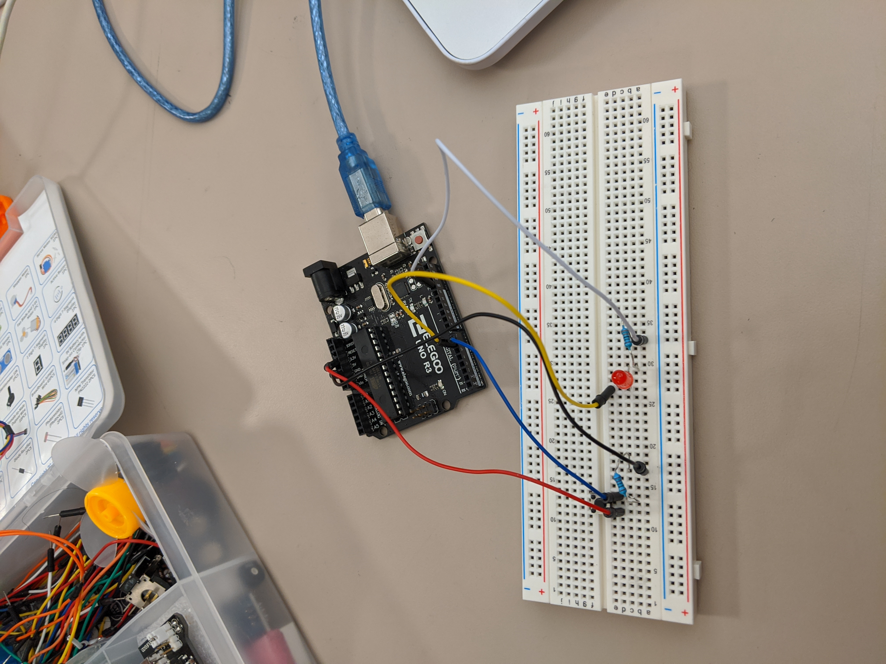
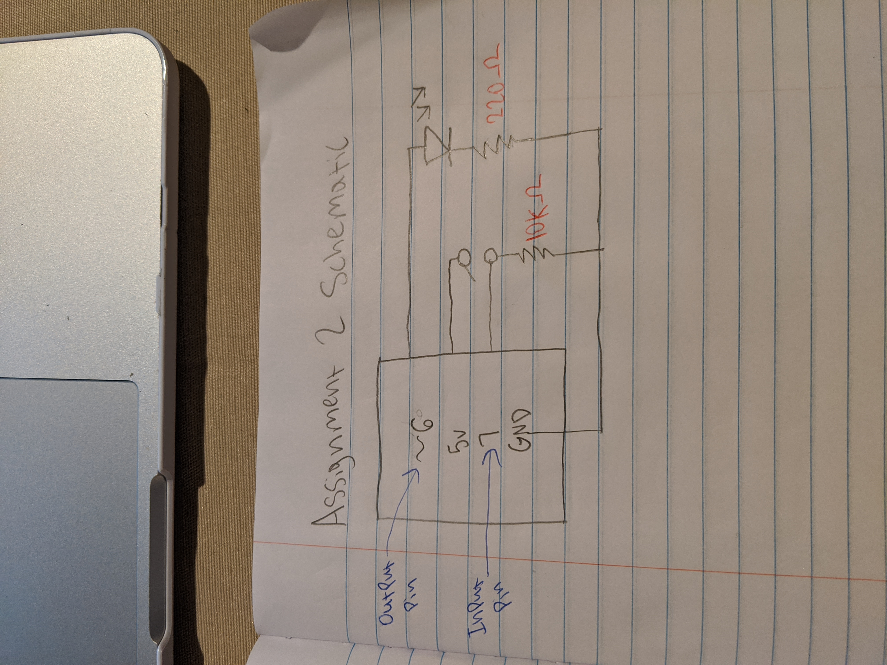
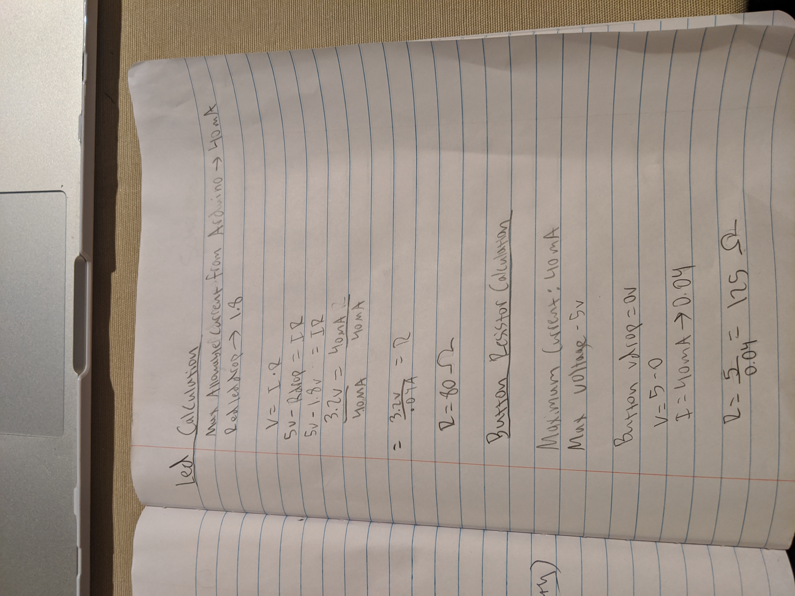
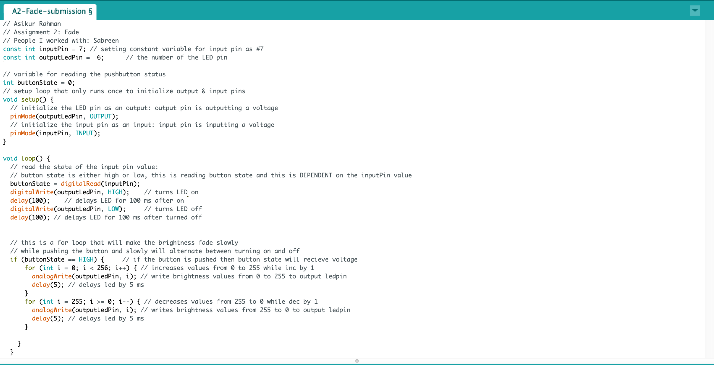
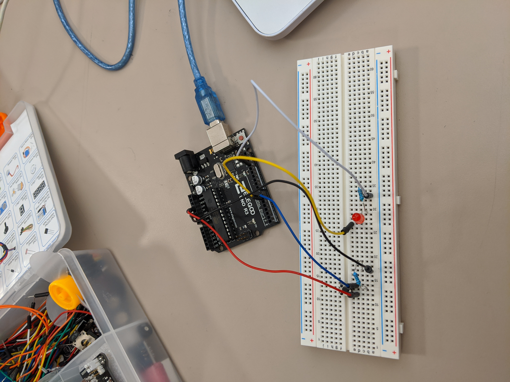
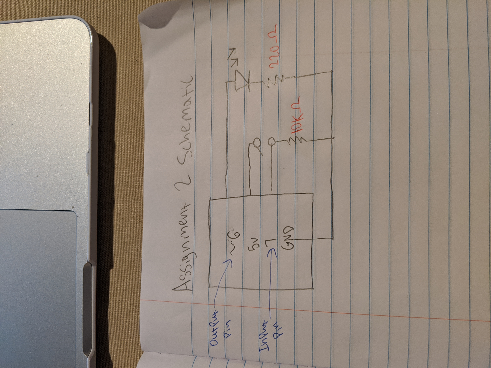
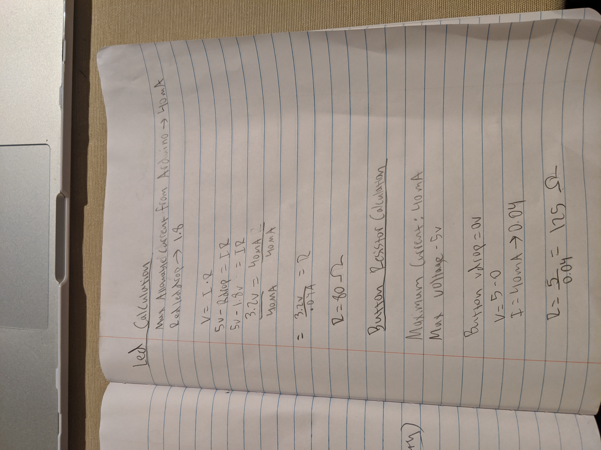
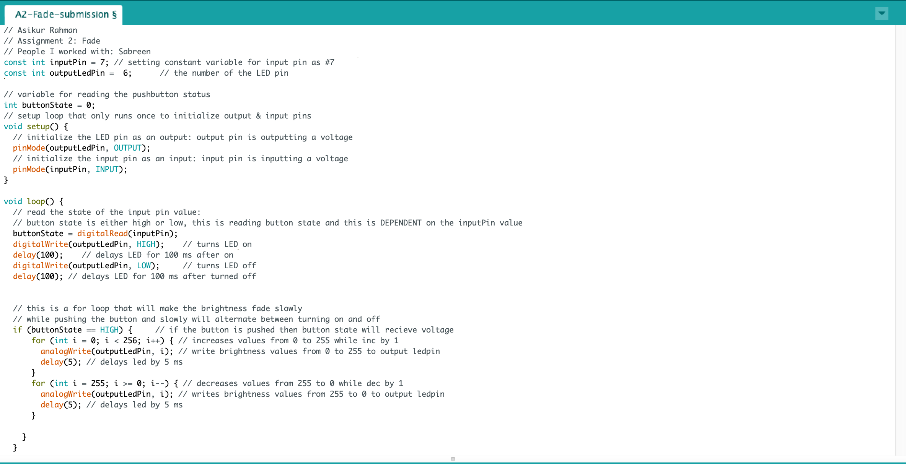

Assignment 2: Fade!
Instructions: Create a schematic, circuit, and code that uses LEDs, a button, a for-loop, digitalWrite(), digitalRead(), and analogWrite().
Circuit Demo: This is a gif showing the circuit operations when assembled
Circuit Diagram:

This is an image showing how my circuit was assembeled
This is a parallel circuit with 2 ciruits. I have one connected to the pushbutton, and the other circuit is connected to the led.
When the pushbutton is pressed, current will pass through an input pin and will send a "HIGH" signal to a program to create the fade interaction.
When the pushbutton is not pressed, the input pin will send a signal "LOW" to a program to stop the fade
Schematic:

This is a schematic of the circuit. I used analog pins to send brightness values to the LED when the pushbutton is pressed.
Calculations:

These are my calculations for how I chose my values for which resistors to use.
I chose 220 resistor for the red led because that was the closest to 125 ohms.
Code Snippet:

This code uses digitalWrite() to help read HIGH or LOW voltage signals and
would turn the LED on or off when pushing the button. analogWrite() was used
to have the LED fade from 0 brightness to full brightness and go backwards
in brightness in a loop until button is unpressed.
This is a gif showing the circuit operations when assembled
Circuit Diagram:

This is an image showing how my circuit was assembeled
This is a parallel circuit with 2 ciruits. I have one connected to the pushbutton, and the other circuit is connected to the led.
When the pushbutton is pressed, current will pass through an input pin and will send a "HIGH" signal to a program to create the fade interaction.
When the pushbutton is not pressed, the input pin will send a signal "LOW" to a program to stop the fade
Schematic:

This is a schematic of the circuit. I used analog pins to send brightness values to the LED when the pushbutton is pressed.
Calculations:

These are my calculations for how I chose my values for which resistors to use.
I chose 220 resistor for the red led because that was the closest to 125 ohms.
Code Snippet:

This code uses digitalWrite() to help read HIGH or LOW voltage signals and
would turn the LED on or off when pushing the button. analogWrite() was used
to have the LED fade from 0 brightness to full brightness and go backwards
in brightness in a loop until button is unpressed.